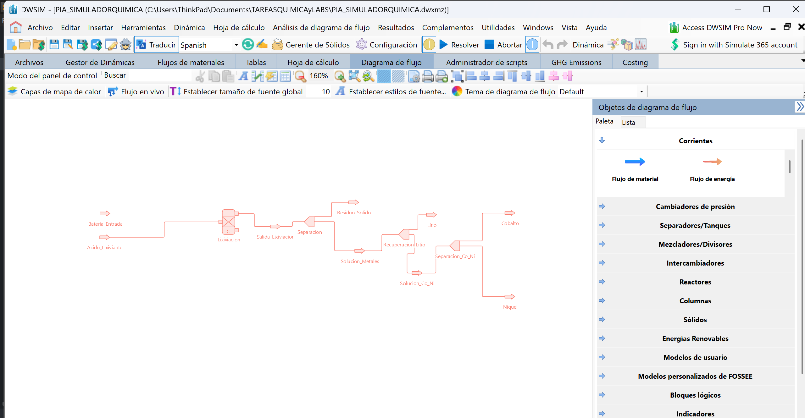

Simulador Interactivo
Modelo de recuperación hidrometalúrgica
Curva de Eficiencia vs. pH
Comportamiento del proceso en todo el espectro de pH
Eficiencia vs. Temperatura
A pH y tiempo fijos — influencia de la temperatura
Diagrama de Proceso
Flujo hidrometalúrgico de reciclaje
Entrada
miento
S/L
de Metales
Litio
Co / Ni
(Co)
(Ni)
Marco del Proyecto
Contexto científico y regional
Proceso Hidrometalúrgico
Ruta de reciclaje química que opera en solución acuosa. Ofrece mayor pureza de productos y menor consumo energético que la pirometalurgia, con recuperación superior al 98% para Ni y Co.
Método principalLitio (Li)
Se disuelve preferentemente en condiciones de pH bajo (<4) con agua caliente. Recuperado como Li₂CO₃ con eficiencia documentada superior al 84%. Metal crítico para celdas de próxima generación.
pH < 4.0Níquel (Ni)
Recuperado mediante precipitación como carbonato. Presente en cátodos NMC y NCA. Separado de cobalto por diferencia de potencial de precipitación. ~99% de recuperación.
pH 4.0 – 6.0Cobalto (Co)
Separado mediante extracción con solventes orgánicos (Cyanex 272, D2EHPA). Recuperado como CoSO₄ de alta pureza. Metal de mayor valor económico en la cadena de reciclaje.
pH > 6.0En Nuevo León, la problemática del reciclaje de baterías se intensifica por su alta actividad industrial y crecimiento urbano acelerado. Actualmente las acciones se centran en campañas de recolección doméstica y gestión industrial mediante empresas privadas en municipios como García. Sin embargo, no existen programas locales específicos de reciclaje químico, lo que representa una oportunidad para proyectos académicos y tecnológicos como éste.
La UANL impulsa campañas de reciclaje electrónico en la comunidad universitaria, y este proyecto conceptual busca ser una herramienta didáctica que fomente la conciencia ambiental en instituciones de nivel superior.
Metodología del Proceso
Etapas del reciclaje hidrometalúrgico
Pretratamiento y descarga
Las baterías se descargan completamente para eliminar riesgos eléctricos, luego se desmantelan mecánicamente separando carcasa, electrodos y electrolito.
Lixiviación ácida
Los materiales activos del cátodo se disuelven en ácido clorhídrico (HCl) o sulfúrico (H₂SO₄). El pH controla selectivamente qué metales pasan a solución. La temperatura y el tiempo determinan la eficiencia de extracción.
Separación sólido-líquido
Filtración de la pulpa para separar el residuo sólido inerte (grafito, plásticos, Cu, Al) de la solución rica en metales disueltos.
Recuperación selectiva de metales
El litio precipita como Li₂CO₃ con Na₂CO₃. Níquel y cobalto se separan mediante extracción con solventes (D2EHPA, Cyanex 272) y precipitación escalonada controlando el pH.
Menor consumo de energía frente a la pirometalurgia (sin fusión a >1000°C)
Alta pureza de los productos recuperados, listos para re-manufactura
Permite separar metales de forma selectiva controlando el pH
Aplicable a escala laboratorio con equipamiento accesible
Favorece economía circular al reintroducir materiales en la cadena de valor
Diagrama en DWSIM
Simulación con software profesional de quimica

¿Qué es DWSIM?
DWSIM (Dynamic Water and Steam Interface Modeler, ahora renombrado como simulador de procesos de código abierto) es un software profesional de simulación de procesos químicos desarrollado bajo la plataforma .NET. Permite diseñar, simular y analizar diagramas de flujo de proceso (PFD) en estado estacionario y dinámico, aplicando modelos termodinámicos rigurosos para corrientes de material y energía.
En el contexto de este proyecto, DWSIM fue utilizado para construir el diagrama de flujo del proceso de reciclaje químico de baterías de ion-litio. El flujo modela las etapas de lixiviación, separación sólido-líquido y recuperación de metales (Li, Co, Ni), conectando operaciones unitarias como reactores, separadores y divisores de corriente, con entradas de batería y ácido lixiviante y salidas de productos metálicos purificados.
Bibliografía
Fuentes de investigación del proyecto
Gaines, L. (2018). Lithium-ion battery recycling processes. Sustainable Materials and Technologies.
Harper, G., et al. (2019). Recycling lithium-ion batteries from electric vehicles. Nature.
Organización de las Naciones Unidas (2015). Objetivos de Desarrollo Sostenible. ONU.
SEMARNAT (2022). Diagnóstico básico para la gestión integral de los residuos en México. Gobierno de México.
Gobierno del Estado de Nuevo León (2023). Programa estatal de manejo de residuos. Secretaría de Medio Ambiente de Nuevo León.
UANL (2023). Campañas de reciclaje electrónico. Universidad Autónoma de Nuevo León.